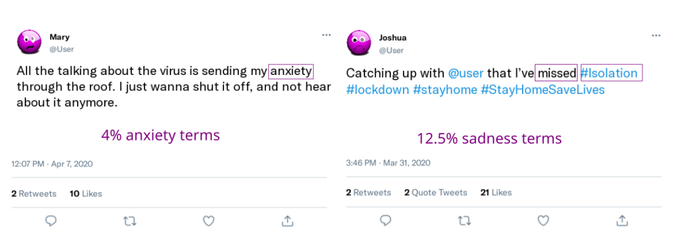

Using Social Media Data to Capture Emotions Before and During COVID-19
Chapter Contents
Introduction
Most people now use social media platforms to interact with others, get informed, or simply be entertained.[1] During the COVID-19 pandemic, social lives moved online to a larger extent than ever before, as opportunities for face-to-face social contact in daily life were limited.
In this chapter, we focus on what can be learned about people’s emotional experiences and well-being from analyzing text data on social media. Such data is relevant for emotion research, because emotions are not only internal experiences, but often social in nature: Humans communicate their emotions in either verbal or nonverbal ways, including spoken and written language, tone of voice, facial expressions, body postures and other behaviors.[2] Emotions are often triggered by social events: we are sad when we miss someone, happy when we meet loved ones, or angry when someone disappoints us. Emotions also provide important social signals for others,[3] informing them of adaptive ways to interact given their own motivation and goals. Given their valuable social function, emotions are regularly shared with other people and thereby influence other people’s emotions.[4] For instance, happiness may spread through social networks, and give rise to clusters of happy and unhappy people.[5]
Social media continuously captures communication between millions of individuals and large groups over long periods of time. Data from these platforms provide new opportunities to trace emotions and well-being of individuals and societies at new scales and resolutions. This has motivated researchers to use social media data to investigate questions around mental health,[6] emotional well-being,[7] anxiety,[8] collective emotions,[9] or emotion regulation.[10]
A particular strength of new computational approaches is that they can aggregate emotion data at large scales and fast temporal resolutions, often relying on text analysis.[11] Large social media datasets that combine data from many individuals are particularly well suited to examine large group phenomena at the level of populations, especially those involving interactions between individuals. For instance, social media has made it possible to study collective emotions, which emerge from the emotional dynamics in a large group of people responding to the same situation at proximate points in time.[12] Interaction between individuals is a key feature of collective emotions, which can change the quality, the intensity and the duration of emotional experiences.
In the following, we provide an introduction to how emotional trends in society at-large can be measured using text data from social media. We describe two studies assessing whether this social media approach in the United Kingdom (UK) and Austria agrees with surveys on short-lived emotional experiences. We also briefly illustrate their application to long-term experiences like well-being or life satisfaction. We then provide an example from the COVID-19 outbreak to illustrate how social media text analysis can be used to track emotions around the globe. Finally, we discuss the advantages and disadvantages of social media emotion measures as compared to self-report surveys.
Assessing emotional expressions in social media data
The language that people use to talk about their own and others’ emotions on social media provides a possible window into their experiences. In this section, we discuss different methods for assessing emotional expressions from text, including their most important strengths and weaknesses.
Dictionary-based methods
One simple way of assessing emotional expressions developed by psychologists are emotion dictionaries, that is, lists of words that are usually associated with a particular emotion or emotional dimension. For example, a dictionary of positive emotions could include words like accept, beautiful, carefree, easiness, trust, and hope. In contrast, a dictionary for sadness may contain expressions like dull, cried, gloomy, heartbreak and miss.[13] The dictionary approach is based on simple word counting: the higher the percentage of words associated with an emotion, the more a text is thought to express this emotion. In this so-called “bag-of-words” approach, the order or context of words is largely ignored.
Researchers have developed dictionaries for discrete emotions (e.g. anxiety, sadness, anger),[14] as well as dictionaries for dimensions of emotions such as valence, arousal and dominance.[15] The expert word lists of LIWC, in particular, have been manually translated and evaluated in many different languages, such as Chinese,[16] French,[17] Spanish,[18] or German,[19] making them particularly suitable to investigate emotions around the globe. Other approaches that only distinguish between negative vs. positive sentiment are SentiStrength[20] and VADER.[21] They also use counts of emotional words, but additionally assign weights to words to indicate the strength of sentiment, and further apply rules to account for other text features like exclamation marks, modifiers like “very” or negation of emotional words such as “not happy”. These additional strategies make SentiStrength and VADER less sensitive to word ambiguities.[22] Lexicon- and rule-based approaches are referred to as unsupervised methods, because they do not require training on datasets of text examples with emotion labels.
Figure 4.1 depicts the coding of two example tweets based on the anxiety and sadness dictionaries from LIWC in English. There are two common approaches to code the emotional expressions in such tweets: (1) to calculate the fraction of emotional terms per tweet, and then take the average across all tweets per day, week or other time period of interest,[23] or (2) to calculate the percentage of tweets in a given time period that contain at least one emotional expression.[24] The latter approach only makes sense when the analyzed texts are short, such as in the case of tweets.
Figure 4.1. Coding of two example tweets based on the anxiety and sadness dictionary from LIWC

Note: The first tweet contains the word anxiety, and 25 words in total. Based on this, one can calculate the fraction of anxiety relevant content (4%) per tweet, or simply count the tweet as one anxiety tweet in a large sample of tweets. After splitting hashtags into separate words (so called “tokenization”), the second tweet contains 16 words. Two sadness-related terms make up a fraction of 12.5%, or the tweet could simply be counted as a sad tweet.
Machine learning methods
Machine learning methods for emotion classification originated from Natural Language Processing research in Computer Science.[25] Among them, the so-called deep learning models or neural networks have the advantage of being able to consider not only word frequencies, but also information such as word order and other features of the context. The usual approach for emotion classification in machine learning relies on supervised methods, which require datasets of annotated texts with emotion labels for model training. These text labels are referred to as “ground truth”, and try to capture how humans would most likely interpret or express emotions in text. To train machine learning models with such a dataset, the texts contained in it need to be transformed to a numerical representation. This can be done through word embeddings or be constructed from unweighted or weighted frequencies for single words or short sequences of words (n-grams)[26] or from index positions of words in vocabulary lists. Current state-of-the-art machine learning models for emotion classification are deep learning models: These models include an unsupervised first training step, during which they learn contextual embeddings, that is, information about word order and context, on large bodies of text without labels from general sources such as news or Wikipedia. This general training step involves, for example, learning to predict words that have been masked in sequences or predicting if a sentence follows a previous sentence (e.g. the models BERT or RoBERTa[27]). In a second supervised training step, these models are adapted (“fine-tuned”) to the particular data source and classification task by running the word embeddings of the training data set through the pre-trained model and only tuning the final layer to predict the labeled classes for all text items (e.g., Twitter postings with emotion labels[28]).
While these deep learning models have the advantage of using most of the information available in text, they have the disadvantage of being black boxes that make it hard to explain why they predict a particular emotion for a particular text. This makes it difficult to check for systematic errors. This, in contrast, is very easy with dictionary-based methods as well as simpler machine learning models based on word frequencies as numerical representations. Yet, such approaches can often catch words in contexts where they do not express an emotion and fail to distinguish between ambiguous meanings of words. However, under the right conditions, when these errors are not systematic and there is enough data (e.g. for population-level emotions), or after removing ambiguous words,[29] dictionary- and frequency-based methods can still lead to satisfying results.
It is important to keep in mind that all of these approaches can only capture expressions of emotions presented in text, which may not necessarily align with people’s own current internal experiences. On social media, people may for instance talk about people may talk about other people’s emotions, or reflect on emotions they experienced recently. Yet, for research questions about collective emotional states, or the emotions of populations, talking about the emotions of others may actually contribute valuable information about users not active on the specific social media platform.[30] Similarly, talking about recent and not current emotional experiences is only an issue when looking at minute-time scales, but not when daily or weekly emotional expressions are measured. One has to further keep in mind that social media data are not actively designed for research purposes, but are the by-product of the use of a technology often designed for profit and influenced by technical decisions (“digital traces”). This raises problems linked to representativity, performative behavior and algorithmic biases.[31] For all of these reasons, it is important to validate measures of emotion for the particular use case. In the following, we present three studies that test which social media emotion measures correlate with self-reported emotions and life satisfaction at the population-level. These studies provide some evidence that certain social media measures can be valid indicators for emotional trends and well-being in societies at large.
Social media correlates for emotions and well-being of populations
We assessed how social media measures for emotions at the level of societies are related to self-reported emotions and life satisfaction in three case studies. They analyzed Twitter and survey data, collected at a weekly and daily frequency in the UK and Austria, respectively.
Weekly emotion measures from the United Kingdom
The weekly YouGov survey in the UK includes questions about how people have felt in the last week.[32] The sample includes around 2000 responses per week, and is representative for the UK population in terms of age, gender, social class, region and education. YouGov achieves this, first, through active sampling by inviting the right proportions per sub-group and allowing only invited participants to take the survey, and second, through statistically weighting to the national profile of all British adults.[33] The survey started in June 2019, and constitutes one of the first opportunities to compare self-reported emotions in a large representative survey of the population with emotion scores derived from social media data.
In our study,[34] we correlated weekly emotion reports with both dictionary and machine-learning emotion measures based on the text of 1.54 billion tweets from users in the UK. We chose social media emotion measures that correspond to three emotions assessed in the survey: sad, scared and happy. We used both the English LIWC dictionaries for sadness, anxiety and positive emotions,[35] and the most closely related emotion labels from a supervised classifier based on RoBERTa (sadness, fear and joy).[36] We trained the RoBERTa model to categorize emotions in a dataset of affective tweets from the SemEval’18 emotion classification competition[37] before predicting emotion labels on our dataset. For more details on model training and accuracy, refer to the Supplementary Information (SI) of our manuscript.[38]
The correlation of social media and survey emotions seems particularly high for the negative emotions of sadness and anxiety.
Before analyzing the data, we reported our hypotheses and our precise analysis plan in a so-called pre-registration.[39] If results can be predicted in advance, this increases confidence in the evidence for the particular hypothesis - in our case - a positive correlation of social media and self-reported emotion measures. We pre-registered our analysis for two different time periods: a retrospective analysis of already existing data from June 2019 to October 2020 (the historical period), and a predictive analysis for tweets posted from November 2020 (the prediction period). Given that men are more visible on Twitter,[40] we used gender information from our Twitter datasource (Brandwatch) to rescale our emotion measures to be more representative of the UK population. Specifically, we rescaled for gender by conducting separate analyses for each gender, before averaging across these results to calculate our final emotion scores. This corrects the measures for the higher proportion of male Twitter users.
Figure 4.2 shows the time-series of emotion reports in the survey and emotion scores calculated based on Twitter data, for both the dictionary and the machine-learning approach. It depicts our analysis separated into the historical period, for which data already existed when we pre-registered our analysis, and the prediction period, for which data did not yet exist at that moment. The x-axis depicts the gender-rescaled proportion of emotion reports in the survey, as well as the proportion of all tweets per week containing emotional terms, or labeled as emotional by our model. To make the time-series visually comparable, the figure presents a z-score for each proportion, calculated by subtracting the mean and dividing by the standard deviation of each time-series. Both social media and survey measures of sadness and anxiety clearly increased during the first COVID-19 outbreak for a relatively long time period. The proportion of tweets with positive emotional expressions on social media changed less, whereas tweets labeled as joy by our machine-learning model, as well as self-reports of being happy, experienced some sharp drops during the outbreak. We discuss emotional responses to the COVID-19 pandemic in detail in the case example later in this chapter.
Figure 4.2. Time-series of the weekly proportion of emotion reports in the YouGov survey and gender-rescaled emotion-scores on Twitter
Note: The left column presents results for the dictionary method (left) and the right for the supervised emotion classifier. Reported correlation coefficients between YouGov and Twitter time series are calculated for the historical period (r~h~) and for the prediction period (r~p~), along with 95% confidence intervals. The 2 periods are separated by the date on which we publicly registered our hypotheses and analysis plan (pre-registration). Values in gray are not significant, values in black are significant at p < .05.
Importantly, we observed high correlations between self-reported sadness and anxiety with Twitter emotion scores for both the historical and the prediction time period (see Figure 4.2). These correlations were particularly high for time periods that included large variations of emotions, such as the historical period that included the start of the COVID-19 pandemic. In most cases, the correlations were similar for dictionary and machine-learning based emotion scores. One notable exception, however, was for the happiness self-reports, which correlate more strongly with the machine-learning score for joy, than the LIWC dictionary-score for positive emotions. In the prediction period, the correlation with the positive emotions dictionary-score was non-significant.
In most cases, correlations were very similar when not re-scaled for gender. Yet, especially in cases where correlations were weaker (i.e., in the prediction period for the scores LIWC anxiety, supervised fear and LIWC positive emotions), rescaling for gender improved the correlation. Rescaling for gender may make the measures more representative, and remove the gender bias present on Twitter, since tweets posted by male users account for more than 60% of tweets with gender detected in our sample.
The degree of association that we observed between self-report and Twitter data is comparable to correlations among subjective variables detected in past research, such as surveys of political attitudes.[41] While social media measures of emotions are not perfect, this analysis demonstrates that they provide a useful complementary source of information about the emotional state of a population. The relationship between social media and survey emotion measures becomes most visible in times of large variations of emotions, such as during the COVID-19 outbreak.
The correlation of social media and survey emotions seems particularly high for the negative emotions of sadness and anxiety. The supervised emotion classifier for joy also revealed good results, while the LIWC dictionary for positive emotions did not. This could be attributed to the LIWC positive emotion dictionary not being specific to a particular emotion, but including a very broad range of positive terms (ranging from handsome to heroic, yummy, intelligent, value or bonus). In contrast to this dictionary, the classifier label “joy” maps directly to the emotion assessed in the survey, which likely explains the higher correlation. Additionally, this could also reflect a dissociation between positive verbal expressions and subjective states: People may use positive words as a way to bond with others or reassure them rather than to express their emotions, perhaps particularly so in negative situations. A similar deviation between positive emotional expressions on Twitter and self-reports has also been found in previous research on population-level life satisfaction and affective well-being.[42]
Given that Twitter users are not representative of the general population in terms of demographics and ideology,[43] the positive correlations between Twitter and survey emotion measures we observed here are somewhat surprising. In contrast, tracking public opinion with Twitter data seems to be more challenging.[44] A potential explanation is that emotional responses to crisis events are fairly similar across different groups of people, here those that use Twitter and those that do not. A second explanation for the strong correlations is that social media users notice and talk about the emotions of other people who are not using these platforms.[45] This may increase the size and representativeness of the group of people whose emotions can be captured using social media data.
In addition to the above analyses focused on correlating social media with survey emotions, we investigated if social media emotion levels would reveal potential gender-differences in response to COVID-19. Gallup World Poll data[46] show that women experienced worry and sadness more often than men in the years before the COVID-19 outbreak. The proportionate increases under COVID-19 were significant for both genders, and slightly larger for females. We analyzed social media emotion levels and changes to test if they replicate these patterns. To do this, we first calculated the proportion of tweets by women and men that expressed anxiety or sadness on Twitter in a pre and post COVID time period. Given that attention on Twitter quickly shifts to novel topics, we used a short COVID-specific time period instead of yearly emotion levels reported for the Gallup World Poll: We compared the first ten weeks after the COVID outbreak in the UK in 2020 to a baseline period at exactly the same time in the year 2019. These ten weeks start with the day with 30 confirmed COVID-cases, namely March 1st, and end with May 10th, thereby excluding tweets linked to the Black Lives Matter protests toward the end of May 2020.
| Pre-COVID | During COVID | Abs. change | Rel. change | |||||
|---|---|---|---|---|---|---|---|---|
| m | f | m | f | m | f | m | f | |
| LIWC anxiety | 4.27 | 4.28 | 4.87 | 5.29 | 0.60 | 1.01 | 14.06 | 23.66 |
| LIWC sadness | 5.96 | 6.34 | 6.58 | 7.50 | 0.63 | 1.17 | 10.50 | 18.39 |
| RoBERTa fear | 6.04 | 6.46 | 7.28 | 7.83 | 1.23 | 1.37 | 20.40 | 21.25 |
| RoBERTa sadness | 14.96 | 16.24 | 16.43 | 18.33 | 1.47 | 2.10 | 9.83 | 12.91 |
Time periods include data from 1 March to 10 May in 2019 for the pre-COVID period and in 2020 for the period during COVID. LIWC denotes the dictionaries with anxiety and sadness words, and RoBERTa the deep learning model used to predict emotion labels.
Table 4.1 summarizes the results. The proportion of male and female Twitter users in the UK who expressed anxiety-terms was similar during the baseline, and increased slightly more in women (by 23%) than in men (by 14%) during COVID-19. The percent of users expressing fear, according to the RoBERTa model, was slightly higher pre-COVID among women (6.46 vs. 6.04%), but then increased similarly in both genders (by 20-21%). For sadness, both methods (LIWC and RoBERTa) showed that sadness expression was more prevalent in women before COVID, and increased more strongly among women during COVID-19 (by about 13-18% vs. around 10% in men). In summary, our Twitter data thus confirm the higher prevalence of sadness pre-COVID in women than men. This gender difference is also slightly visible for fear, but not necessarily for anxiety. During COVID-19, the increases in anxiety and sadness are larger for women than men in both types of data, to a greater extent in the Twitter data than in the Gallup survey.
Daily negative and positive sentiment measures from Austria
In a similar study using data from Austria,[47] we compared daily self-reports of negative and positive emotions collected in a survey with sentiment based on postings from two social media platforms. We used data from a daily emotion survey conducted on the website of an Austrian online newspaper (Der Standard) for three weeks in November 2021, and text data from the discussion forum on the same website with around 25 thousand posts per day on average, as well as from Twitter users in Austria.
In the emotion survey, participants reported if they had rather positive or negative feelings when thinking of the previous day. Based on 268,128 reports, we calculated the fraction of self-reported positive emotions over the total of self-reports in a day. As in the UK study, we calculated text sentiment scores with both emotion dictionaries,[48] as well as a supervised deep learning classifier based on BERT (German Sentiment, GS[49]). The text data included a large number of postings from the two social media platforms: around 1.5 million posts on the forum of Der Standard, and around 1.35 million tweets. Despite their large size, these datasets are noticeably smaller than the ones in the UK study above due to the much shorter time window (three weeks vs. two years), the much smaller country population (8.9 million vs. 67.2), and because a lower proportion of the total population use each social media platform (UK active Twitter users 29% vs. Austrians with an account on Twitter 17% and on Der Standard 6%[50]). We rescaled daily text sentiment aggregates by subtracting and dividing by a baseline mean. The baseline was defined as the time period from the first Austrian COVID-19 lockdown (March 16th to April 20th 2020), since the survey period was also during a lockdown. To make text sentiment comparable to the survey, we subtracted the rescaled negative emotion measure from the rescaled positive emotion measure for both LIWC and GS. We also calculated an aggregate text sentiment measure by taking the average of the resulting scores across LIWC and GS. Results reported below used this aggregate measure, but Table 4.2 reports results separately for each method and the positive and negative component.
We found a very strong and robust positive correlation between the survey and the Der Standard aggregate sentiment (see Figure 4.3 A, r=0.93, 95% CI [^0.82,0.97], p<10^-8^). The text sentiment aggregate explained 85% of the variance in the daily proportion of positive emotions (see Figure 4.3B). Similarly, when comparing changes in the proportion of positive emotions between one day and the next, the text sentiment aggregate explained 70% of the variance in changes in reported emotions (Figure 4.3C).
Figure 4.3. Time-series and correlation of reported emotions and text sentiment in the Der Standard online forum
Note: Panel A: Time series of the daily percentage of positive emotions reported in the survey and the aggregated sentiment of user-generated text on derstandard.at. The shaded blue area corresponds to 95% bootstrapped confidence intervals. Panel B: Scatterplot of text sentiment and survey responses with regression line. Panel C: Scatterplot of the daily changes in both text sentiment and survey responses compared to the previous day, with regression line
We tested the robustness and generalizability of our results using data from Twitter as a second social media platform. This pre-registered analysis also found a clear positive correlation between the survey on Der Standard and aggregate text sentiment on Twitter (r=0.63, 95% CI [^0.26,0.84], p<0.003). This correlation is already in itself surprisingly strong, especially given that the survey and the postings come from different platforms. Based on our pre-registration, we had only included data from non-organisational accounts and accounts with fewer than 5000 followers. When we relaxed this criterion to 100 000 followers, as in our other studies,[51] the correlation increased to r=0.71 (95% CI [^0.39, 0.88], p<.0005). This shows that influential accounts in social networks contain crucial information to calculate sentiment aggregates, in line with the hypothesis discussed above that Twitter users may sense the emotions of others.[52] We further found that the Twitter sentiment signal is lagged by a day compared to the emotion survey. Shifting by one day yielded a correlation of r=0.90 (95% CI [^0.75,0.96], p<10^−6^). While news articles are immediately discussed in the online newspaper forum, this discussion seems to take a day to reach other social media platforms.
Comparing dictionary-based (LIWC) and machine-learning based methods (GS) in this study with German text data revealed that both methods contribute to explaining self-reported emotions (see Table 4.2). Positive GS measures correlated more strongly with survey emotions, although positive LIWC also performed well. Yet, for negative emotions, the best method depended on the platform (GS for Der Standard data, LIWC for Twitter data). Overall, both of these German negative sentiment measures performed worse than the positive ones, suggesting some room for improvement.
Combining negative and positive emotion components into one aggregate score proved to result in the highest correlations with self-reported emotions in the GS case, and for LIWC with data from one of the two social media platforms. Table 4.2 reports results for each component (positive, negative) and each method (LIWC, GS) separately.
| Correlation with positive survey emotions | Der Standard postings on the same day | Twitter postings one day later |
|---|---|---|
| LIWC+GS combined | 0.93 [0.82,0.97] | 0.90 [0.75,0.96] |
| LIWC (positive-negative) | 0.74 [0.44,0.89] | 0.85 [0.65,0.94] |
| LIWC positive | 0.81 [0.56,0.92] | 0.80 [0.56,0.92] |
| LIWC negative | 0.03 [-0.42,0.46] | -0.74 [-0.89,-0.43] |
| GS (positive-negative) | 0.91 [0.78,0.96] | 0.91 [0.79,0.96] |
| GS positive | 0.89 [0.75,0.96] | 0.91 [0.79,0.97] |
| GS negative | -0.57 [-0.81,-0.18] | -0.39 [-0.71,0.06] |
Note: The table includes sentiment aggregates (positive minus negative emotions), as well as positive and negative components separately. Shift 1 denotes a shift of one day. Brackets indicate 95% bootstrapped confidence intervals.
In conclusion, this second study finds that measures of sentiment based on text from the online forum of a newspaper track daily emotions reported by readers of that newspaper. These results also generalize to text sentiment on a second and separate social media platform. We find strong positive correlations with both levels and changes of daily sentiment. When comparing machine-learning and dictionary-based methods, the supervised classifier shows more consistent performance and generally higher point estimates (although with overlapping confidence intervals and not for LIWC negative on Twitter). Combining both methods for Der Standard adds a small increase to the already strong correlations of the supervised classifier alone.
Longer-term well-being: satisfaction with life in the United Kingdom
Affective measures of well-being, like current happiness, anger, or sadness, can change on a daily basis. For instance, affective measures of well-being follow a well-known weekly pattern, with more positive emotions on weekends than weekdays.[53] In contrast, evaluative measures of well-being, including life satisfaction, are more stable,[54] given that they ask people to reflect on their life as a whole rather than their current affective state. Given that most social media interactions are very short-lived, one would therefore predict a lower correlation between text-based positive or negative emotion measures with self-reported life satisfaction than with affective measures.
We explored whether social media posts can be used to predict changes in life satisfaction using YouGov’s UK weekly life satisfaction survey in which respondents are asked: “Overall, how satisfied are you with your life nowadays?” To approximate the answer to this question with text from social media, we used Twitter data from the above study in the UK. We calculated a gender-rescaled daily score as dictionary-based positive minus negative emotions, as in previous research.[55] We used LIWC to measure the frequency of tweets expressing positive and negative emotion. We applied a rolling window of four weeks to encode the longer timescale of the question and compared the answers to the survey in a given week to the Twitter data from the same week and the previous three weeks.
Figure 4.4 shows the time series of life satisfaction and Twitter sentiment for the historical and prediction period defined in the UK study. The correlation between the Twitter signal and satisfaction with life is 0.38 (95% CI [^0.14, 0.57], p<.01) in the historical period and 0.56 (95% CI [^0.27, 0.75], p<.001) in the prediction period, suggesting that emotional expression on Twitter might be partially informative of population-level changes in subjective well-being. As anticipated, these correlations are smaller than those seen between Twitter sentiment and daily or weekly emotion measures reported above, which aligns with past research on the relative sensitivity of affective state measures and stability of life evaluation measures.[56] That social media measures relate to life satisfaction in similar ways as self-reported emotions further increases the confidence in the validity of social media emotion measures.
We must highlight, however, that this analysis shows the changes over time within a country and does not test whether different levels across regions could be explained with social media data. Previous research has shown weak or inconsistent results when correlating various well-being measures with LIWC-dictionary-based text analysis results across regions in the United States.[57] This may hint that these emotion measures might not be good to identify differences in well-being between places, but can be good enough to identify changes over time within the same place. In contrast to LIWC, machine-learning based emotion scores yielded more robust predictions of self-reported life satisfaction in the same US study. Future research could investigate if LIWC works better for correlating across regions when using changes rather than levels of well-being. One further explanation for why we observed positive correlations with LIWC-emotion measures, although Jaidka et al.[58] did not, are the strong variations of social media emotions and subjective well-being during large events like the COVID-19 pandemic.
Figure 4.4. Time series and correlation of satisfaction with life (SWL) in the YouGov survey and dictionary-based sentiment in Twitter
Note: Dictionary-based sentiment was calculated by subtracting the frequency of tweets expressing positive emotions minus those expressing negative emotions.
Given that life evaluation measures encompass so much information, the medium-sized correlations with social media emotions we observed are impressive, and suggest that further developing social media measures for long-term well-being is promising. However, we must note that the time span for which the YouGov survey is currently available is too short to draw strong conclusions about such slowly-changing time series. This also calls for future research when more data are available.
Given that digital traces from social media seem to be valid indicators for the emotional state of populations, we will now demonstrate how social media data can be used to investigate the evolution of emotions around the globe during the early outbreak of the COVID-19 pandemic in 2020.
A case example: Emotional expressions on Twitter during the COVID-19 outbreak
The COVID-19 pandemic exposed people from all over the world to unexpected and unprecedented health threats and drastic changes to their social lives. Using social media data, we tracked people’s emotional well-being in countries around the world as a new dangerous virus spread, and increasingly stricter protection measures were implemented. During the first 5 weeks of the COVID-19 outbreak, we analyzed data on 8.3 billion public tweets in six languages, (English, Italian, Spanish, German, Dutch and French) from 18 countries. These countries included ten from Western Europe (Austria, Belgium, France, Germany, Ireland, Italy, the Netherlands, Spain, Switzerland and the United Kingdom) four from Latin America (Chile, Ecuador, Mexico and Peru) and four other western industrial countries (Australia, Canada, New Zealand and the United States). We focused on evolutions of anxiety, anger, sadness and positive emotions, because we expected the pandemic events to impact these emotions, and because all of them may be relevant to the management of a pandemic outbreak. Anxiety, for instance, develops when people lack clear explanations and feel unable to cope with a threat,[59] and impacts risk perception, active information seeking, and compliance with recommendations.
Following the methodological approach in earlier studies of emotional responses to catastrophic events,[60] we measured the proportion of emotional tweets expressing either anxiety, sadness, anger or positive emotions using LIWC,[61] an emotion-dictionary that exists in all of these six languages. We matched the text of tweets to the word lists from the dictionary, and then calculated the daily number of tweets that contained at least one of the emotional terms for the time period between 1 January 2019 and 15 April 2020. In order to allow for comparisons between countries, we baseline-corrected the proportion of emotional tweets for the average level in 2019 (subtracting and dividing by this baseline). In addition to investigating the evolution of emotional expressions over time, we analyzed associations with real world events, including the number of confirmed COVID-19 cases[62] and the stringency of measures against the spread of the virus.[63]
Anxiety
At the start of the COVID-19 outbreak, we observed large increases in the percent of tweets containing anxiety terms in all countries. Figure 4.5 illustrates this change for anxiety in four example countries with different native languages. It shows for instance that anxiety-terms increased for the first time by more than 40% exactly at the time the first case of COVID-19 was diagnosed in Italy. They then increased to their highest peak of 96% when cases began to rise, shortly before stringent measures against the spread of the virus were implemented for the first time. The highest anxiety peaks in the 18 countries were in between 20% and 96% increases from the baseline. The brief anxiety peak just before the outbreak in Germany is a good example for how emotional expressions on Twitter usually change in response to one-off catastrophic events, here a terrorist attack in Hanau. The higher use of anxiety-terms during COVID-19 was much more sustained. Figure 4.5 further indicates the time periods used for most statistical analysis with gray rectangles at the bottom of each panel: A control period from mid-January to mid-February, and the first five weeks after the outbreak (the day with 30 cases) in each country. Using the average across these five weeks, Figure 4.6a shows that the increase in anxiety-terms could be observed in all 18 countries in our sample. More specifically, during the first five weeks after the outbreak, anxiety-related terms were on average between 5 and 40% higher than during the baseline period (the year 2019).
Figure 4.5. Time series of emotional expressions on Twitter in four example countries with different languages
Note: The left y-axis depicts the percentage of tweets containing words for each emotion, as well as the value of the stringency increase (range 0-100). For emotions, a value of zero corresponds to the average level per weekday in 2019. The right y-axis depicts cumulative number of cases and deaths on a log-scale (the maximal number is different for each country). Colored vertical lines depict important events, which were identified by inspecting word frequency plots on the date of the peak. The labelled spikes highlight the face validity of the emotion measures: In Germany, anxiety and anger increased after a terrorist attack. In the US and Canada, sadness increased in response to reports about Kobe Bryant’s death, whereas anxiety increased as Americans excitedly followed the play of their favorite football teams during the Superbowl. Anger and anxiety spiked after the US military assassinated Iranian military officer Soleimani, as well as during the election of a prime minister in a politically polarized climate in Spain. The gray rectangles at the bottom of each figure depict the time periods this study used for some analyses: a control period from mid-January to mid-February, and 5 consecutive weeks after the outbreak in each country (the day with 30 cases).
Figure 4.6. Consistency of emotion changes across countries in the 5 weeks after the outbreak
Note: The x-axis depicts the average percentage change of tweets containing at least one emotion word in the five weeks after the COVID-19 outbreak compared to the baseline. Error bars represent binomial 95% confidence intervals calculated with the Clopper-Pearson method.
In the first week after the outbreak (defined as the day where COVID-cases reached 30 cases in a country), the extent of the anxiety increase clearly correlated with the growth in COVID-19 cases across countries (r=0.52, p=.023, Figure 4.7a). Most of the countries with the highest anxiety levels were also those with the strongest growth in confirmed COVID-cases in the first week, including for example Ireland and New Zealand. Italy is one exception with a lot of anxiety expressions but lower case growth; anxiety in Italy was likely influenced by Italy being the first country in Europe where cases were diagnosed.
Anxiety seems not only related to cases, but also to the increase in the stringency of measures.
Anxiety seems not only related to cases, but also to the increase in the stringency of measures that governments implemented to reduce the spread of the virus. As the timelines of Italy, Spain and the US in Figure 4.5 illustrate, anxiety and the stringency increase happen almost in parallel. The increase of anxiety-related terms on Twitter occurred shortly before or at the same time as more stringent measures were implemented in 15 of 18 countries. As Figure 4.7 shows, anxiety starts to decrease 2-3 weeks later, once stricter measures are in place. This decrease may reflect that people relaxed as they felt that governments were doing something to cope with the threat and to protect them. Words like staying (at home), buying (of groceries), emergency, health, contagion and information were among the most frequent words in anxiety tweets, confirming that a large part of people’s worries were directly linked to the spread of the virus as well as the consequences of lockdowns.
Figure 4.7. Associations of emotion levels with COVID-19 cases and measure stringency
Note: (a) Cross-country correlation of anxiety with increase in COVID-19 cases in the first week after the outbreak: Correlation between mean difference in anxiety compared to baseline and absolute difference in cases compared to the previous week. (b) Box-plots of country emotion means in time periods before, during and after the first strong increase in stringency of measures. In the control period, there were none or only light measures in most countries. One week before the first clear increase, measure stringency was still low in most countries. Two weeks after the first clear increase it was constantly high in all countries. Dots represent individual countries.
Sadness
Sadness-related expressions increased more gradually and later than anxiety-related ones. This is visible in Italy, Spain and the US in Figure 4.5. On average, sadness reached its highest level three weeks after the outbreak, and remained stable for the following two weeks (these weeks are visually indicated with gray rectangles for the four example countries in Figure 4.5). The gradual increase of sadness terms occurred a while after stringency of social distancing measures increased, and remained high about two weeks later (Figure 4.7b). Although sadness increased less than anxiety, peak increases still ranged from 7% to 52% among countries. Figure 4.6b illustrates that the increase in sadness expressions was also quite consistent across countries, with only 2 countries not showing a significant increase. The timing and the duration of the changes in sadness terms suggests that sadness may have been a response to the loss of contact and daily routines during lockdowns. Consistent with this, words related to physical distancing (quarantine, isolation, confinement, social, lockdown, stay at home, going out) were used more often in tweets expressing sadness (and other emotions) than in other tweets (see the SI of our study).[64] In contrast, deaths were in general not mentioned frequently, which makes sense given that there were not that many casualties during the early stage of the pandemic. Altogether, the timing and content of tweets with sadness-related expressions suggest that changes to people’s everyday life were a driving factor of the increase in sadness.
Anger
Anger expressions on Twitter decreased during the onset of the pandemic. Similar to sadness, this change also occurred gradually, starting around the time of the first clear increase in measure stringency in most countries. Anger expressions significantly dropped in 14 out of the 18 countries, and remained less frequent until the end of the five weeks we analyzed. The decreases around the onset of stringent measures may indicate that people were generally not opposed to the actions their governments took at this early point in the pandemic. In addition, decreases of anger terms may also be a consequence of discussions on Twitter focusing on COVID-19, and therefore less on the many other controversial and political topics that are usually discussed on this social media platform in many countries. Although media discourse might have created the impression that people were angry about government regulations during the first outbreak, they may actually have been less angry than about previous political decisions. Consistent with this, we observed a shift in topics of conversation from political ones in 2019 to pandemic-related issues after the outbreak across countries and emotions.
Anger expressions on Twitter decreased during the onset of the pandemic.
Positive emotions
In contrast to the three negative emotions discussed above, expressions of positive emotions on Twitter remained relatively stable during the first 5 weeks of the pandemic. Average changes during this time period were between -5 and +5% (Figure 4.6d). In six countries, positive emotion terms dropped slightly just at the moment when public health measures became more strict (Peru, Italy, New Zealand, Mexico, Chile, Spain). This can be observed, for example, in the time series for Italy in Figure 4.5. This decrease was brief, however, possibly because people started to notice positive aspects (e.g., of spending more time at home). This finding could suggest at least a short-term resilience to the challenges during the early phase of the COVID-19 outbreak. Yet, it could also be a consequence of the broad range of terms included in the positive emotions LIWC-dictionaries. Some positive emotions may have actually decreased more, while others may have increased.
Duration of emotional changes
To assess the duration of emotional changes, we counted the number of days in a row during which social media emotion measures remained significantly above or below their median level of the previous year in each country. These time periods were much longer during the pandemic outbreak than what was observed during previous one-off catastrophic events.[65] The maximal duration of sustained changes in all four emotions during COVID-19 were among the longest ones since the beginning of 2019 in all countries, and the single longest one in the majority of countries (see Figure 4.8). Specifically, 16 out of 18 countries had not experienced such long periods of elevated anxiety and sadness before COVID-19. Ten and eleven countries, respectively, also experienced the longest sustained periods of decreased anger and positive emotions during COVID-19. Longer increased anxiety before COVID-19 occurred only in two countries during political protests in 2019 (against social inequality in Chile, and austerity measures in Ecuador). Similarly, longer elevated sadness occurred in Chile during the same protests, and after a political scandal in Austria (the so-called Ibiza affair).
Figure 4.8. Time intervals for which anxiety and sadness remained continuously above their median level in 2019 in each country
Note: Time intervals (number of days) are split into those occurring before (from 1 January 2019 until first case) vs. during the COVID-19 pandemic (from the first case per country until April 15). Empty circles represent the maximal number of days per time period, while the gray box plot represents the distribution of time intervals before COVID-19. Because most countries only experience one or a few long intervals after the first case, only maximal values are depicted for this time period.
Conclusion on collective emotions during the COVID-19 outbreak
Taken together, our analysis of social media text data during the early COVID-19 outbreak revealed the most enduring changes in emotional expression observed on Twitter since at least the beginning of 2019 in most of the 18 countries. Anxiety-related terms increased early and strongly in all countries, shortly before the onset of lock-downs. The upsurge of anxiety was stronger in countries with larger increases in cases. Sadness terms rose and anger terms decreased around two weeks later, shortly after strict physical distancing measures like lock-downs were implemented. Sadness and anger expressions remained high and low, respectively, until the end of the five weeks we analyzed, suggesting that expressions of these emotions may have been associated with people’s experiences during lock-downs. In contrast, anxiety expressions gradually decreased towards baseline a while after the onset of strict measures, possibly indicating that people got used to the new danger and public health measures, or were relieved that measures were taken. Positive emotions remained relatively stable throughout this early phase of the pandemic. Time-sensitive analyses of large-scale samples of emotional expression such as this one could potentially inform mental health support and risk communication during crisis.
When to use social media data: Strengths and limitations
Social media indicators for emotions are better suited to assess emotional well-being in some than in other situations. Many features of social media data are not clearly disadvantages or advantages, but have good and bad sides depending on the research question. Although we have assigned each feature to either strength or limitations below, we highlight both sides and compare to survey research where relevant.
Strengths of social media data
Collecting social media data typically requires much lower effort and costs than surveys. Digital trace data is collected constantly as social media are “always on”,[66] allowing changes in emotions or other measures to be monitored at very short time intervals. Their continous historical record further allows matching the time course of emotional changes to unexpected events, such as natural disasters and terrorist attacks[67]. Most survey research only starts with a considerable delay after such events, and therefore lacks a baseline measure. In addition to studying rare and unexpected events, the large size of social media datasets also allows researchers to study heterogeneity across regions or time, and to detect small differences.[68]
Social media data seem to more accurately reflect people’s responses in surveys for short-lived emotional experiences, than longer-term well-being.
The above case studies have shown that social media data seem to more accurately reflect people’s responses in surveys for short-lived emotional experiences, than longer-term well-being, such as life evaluations. That social media data is better suited for more short-lived phenomena is true beyond emotion research: Long-term analyses of social media data are complicated by drift in who uses social media, in how it is used, and of the platform system itself over time.[69]
Social media analysis relies on written emotional expressions to provide an indirect measure of emotions. This is sometimes seen as a disadvantage compared to surveys, which directly ask people about their internal emotional experiences. Yet, indirect measures also have their advantages: They are less reactive than direct measures, that is, less likely to change behavior.[70] Direct questions make strategic answers more likely, that is, respondents can say what others like to hear and avoid unpopular answers. In contrast, indirect social media emotion measures are less influenced by social desirability, the reference group effect, and other reporting biases.[71] Their continuously available measures also reduce memory biases in questions about emotions in the past. Furthermore, if a more direct measure is required, this can also be achieved with social media data by only focusing on explicit emotion expressions like “I am sad/angry/happy etc”.[72]
Finally, social media can in some circumstances include people that are hard to reach with surveys. For instance, they make it easier to include non-English speakers as no survey translation is necessary, which is especially important when studying low-income countries.[73]
Limitations of social media data
Unlike surveys and experiments, which can be tightly controlled and usually include control groups, it is much harder to draw causal conclusions from observational social media studies (low internal validity). In contrast, social media emotion measures have potentially high ecological validity, and can capture the social nature of emotions, as they trace emotional expressions in real online social interactions.[74]
Social media data are usually not representative, and the lack of individual demographic data makes it hard to study specific population sub-groups. Surveys are more suited for research questions that require such data. Non-representative social media data can still be very useful for within-sample comparisons,[75] and, as we have shown, can correlate with emotional self-reports in representative surveys at the population-level, providing some evidence for convergent validity. Yet, we only provide evidence that social media indicators can capture emotions in societies at large. It remains to be further investigated under which circumstances and with which methods this works best. Evidence regarding validity of social media emotion measures at the level of individuals or small groups is currently weak. Some studies on within-person correlations of self-reported emotions or life satisfaction with emotion expressions in text found higher correlations for negative than positive LIWC dictionaries.[76] Others found no substantial correlations.[77] Some of these studies work with Facebook posts, others with recordings of everyday speech or essays in which individuals wrote down their current thoughts (stream of consciousness). Some use counts of words, others look at the size of vocabularies individuals use to express each emotion. It remains to be explored which methods work best, and which types of data contain information about emotions.
Although social media data is less influenced by reporting biases than surveys, social media users know that their postings will be read by others, which influences what they say and do not say. Social media data are further not designed for research purposes, and often do not contain the information that would most precisely measure the construct of interest.[78] Instead, they are much more “dirty”[79] than traditional social science research data, usually including spam and postings by bots. Additionally, they are algorithmically confounded, meaning that algorithms and platform design influence the behavior that is observed. Finally, access to social media data is controlled by private corporations, and the data can sometimes include sensitive information.
Social media data can support research questions for which survey data are not available.
Table 4.3 provides an overview of strengths and limitations of social media emotion measures discussed in this section.[80] To provide a guide for interested researchers, we published a methodological survey of best practice examples, as well as common pitfalls of research using social media data in affective science.[81] When used critically and with robust methodologies, these large-scale observational data can serve as valuable complements to traditional methodologies in the social sciences.
| Features of social media data | |
|---|---|
| Strengths | Limitations |
| Low cost and effort for data collection | Incomplete: Not designed for research |
| High time-resolution (down to minute time-scales) | “Dirty”: Include spam and postings by bots |
| Continuous historical record | Drift in social media users, ways of using them, and in platform design complicates studies of long-term trends |
| Access to very large samples | Non-representative samples |
| Non-reactivity of indirect measures: not influenced by reporting biases | Behavior is not “natural”: People only talk about certain things on social media, and avoid talking about others. |
| Provides access to information from people that are hard to reach with surveys (e.g. working population, non-English speakers) | Data are sometimes inaccessible and/or sensitive |
| Data is algorithmically confounded | |
| Influence on validity of social media research | |
|---|---|
| Strengths | Limitations |
| High ecological validity: behavior in real online social interactions | Low internal validity: causal conclusions are difficult |
| Current evidence suggests potential convergent validity for measuring emotions of large groups (e.g. societies). Yet, evidence differs across different emotions and methods. | Evidence for convergent validity of individual-level emotion is weak. |
| Higher convergent validity for short-lived emotional experiences. | Lower convergent validity for long-term well-being measures like life satisfaction. |
Conclusion
Three case studies presented in this chapter provide evidence that emotion measures based on social media postings can track emotions at a society-wide level. These aggregate measures seem to be more accurate for measuring affective experiences at shorter time-scales, with correlations highest for short-lived emotions reported daily, and lowest for more slowly changing measures of well-being like satisfaction with life. In both cases, and especially for slower well-being trends, more research is needed once further data are available. When gender information is available, rescaling for gender can increase the information available from sentiment measures. Dictionary-based as well as machine-learning based methods of assessing emotions in text seem to contribute some information to predict emotions reported in surveys at the population level in our case studies. Regarding the LIWC dictionaries, this works better for anxiety and sadness than positive emotions in English, and better for positive than negative emotions in German. Finally, in English and German, machine-learning measures for positive emotions performed better than dictionary-based measures.
Social media data can support research questions for which survey data are not available, such as retrospective analyses, crisis research, or studies on populations hard to reach with surveys. We have presented one example for crisis research, using indicators of emotional well-being in 18 countries during the COVID-19 outbreak. During the first five weeks of the COVID-19 outbreak, we observed strong initial increases in expressions of anxiety on Twitter, associated with the growth in cases and the stringency of measures. A bit later, social media measures of emotional expressions indicated a gradual increase in sadness and decrease in anger, which began at the time where stringency measures included strict lockdowns. Anxiety gradually relaxed once measures had been implemented, suggesting that people habituated to the new circumstances or felt reassured by their governments’ actions. Anger expressions dropped as discourse on social media shifted away from politically polarized discussions and focused on COVID-19. Sadness seemed more strongly associated with effects of social distancing measures on people’s personal lives, and only linked to deaths by COVID-19 as these became more prevalent.
The correlation studies presented in the first half of this chapter suggest that social media data reveal information about the emotional well-being of residents of these countries during this early pandemic stage. Taken together, social media emotion data provide added value in addition to representative surveys. The correlations we observed in the UK study were in the range of correlations between surveys, suggesting that social media data are suitable as a complementary source of information on emotions. Potentially, social media and survey data may even contribute some unique information to predict outcomes like suicide hotline calls, hospital visits, police calls, or overdose rates. Future research could explore if combining these two sources of data could help to better predict and respond to such important outcomes.
References
Aknin, L., De Neve, J.-E., Dunn, E., Fancourt, D., Goldberg, E., Helliwell, J. F., Jones, S. P., Karam, E., Layard, R., Lyubomirsky, S., Rzepa, A., Saxena, S., Thornton, E. M., VanderWeele, T. J., Whillans, A. V., Zaki, J., Karadag Caman, O., & Ben Amor, Y. (2021). Mental health during the first year of the COVID-19 pandemic: A review and recommendations for moving forward. Perspectives on Psychological Science. https://ora.ox.ac.uk/objects/uuid:eb6e61dd-9e50-48d1-b64b-5d9106b6225d
Barbieri, F., Camacho-Collados, J., Neves, L., & Espinosa-Anke, L. (2020). TweetEval: Unified Benchmark and Comparative Evaluation for Tweet Classification. ArXiv:2010.12421 [Cs]. http://arxiv.org/abs/2010.12421
Beasley, A., Mason, W., & Smith, E. (2016). Inferring emotions and self-relevant domains in social media: Challenges and future directions. Translational Issues in Psychological Science, 2(3), 238–247. https://doi.org/10.1037/tps0000086
Chancellor, S., & De Choudhury, M. (2020). Methods in predictive techniques for mental health status on social media: A critical review. Npj Digital Medicine, 3(1), 1–11. https://doi.org/10.1038/s41746-020-0233-7
Credé, M., Bashshur, M., & Niehorster, S. (2010). Reference Group Effects in the Measurement of Personality and Attitudes. Journal of Personality Assessment, 92(5), 390–399. https://doi.org/10.1080/00223891.2010.497393
Devlin, J., Chang, M.-W., Lee, K., & Toutanova, K. (2019). BERT: Pre-training of Deep Bidirectional Transformers for Language Understanding. ArXiv:1810.04805 [Cs]. http://arxiv.org/abs/1810.04805
Diener, E., Oishi, S., & Lucas, R. E. (2003). Personality, Culture, and Subjective Well-Being: Emotional and Cognitive Evaluations of Life. Annual Review of Psychology, 54(1), 403–425. https://doi.org/10.1146/annurev.psych.54.101601.145056
Dodds, P. S., Harris, K. D., Kloumann, I. M., Bliss, C. A., & Danforth, C. M. (2011). Temporal Patterns of Happiness and Information in a Global Social Network: Hedonometrics and Twitter. PLOS ONE, 6(12), e26752. https://doi.org/10.1371/journal.pone.0026752
Dong, E., Du, H., & Gardner, L. (2020). An interactive web-based dashboard to track COVID-19 in real time. The Lancet Infectious Diseases, 20(5), 533–534. https://doi.org/10.1016/S1473-3099(20)30120-1
Elayan, S., Sykora, M., Shankardass, K., Robertson, C., Feick, R., Shaughnessy, K., Haydn, L., & Jackson, T. (2020). The stresscapes ontology system: Detecting and measuring stress on social media. In ECSM 2020 7th European Conference on Social Media (p. 74). Academic Conferences and publishing limited.
European Commission. (2018). Eurobarometer 88.3 (2017). (ZA6928 Data file Version 1.0.0). TNS opinion, Brussels [producer]. GESIS Data Archive, Cologne. https://doi.org/10.4232/1.13007
Fan, R., Varol, O., Varamesh, A., Barron, A., Leemput, I. A. van de, Scheffer, M., & Bollen, J. (2019). The minute-scale dynamics of online emotions reveal the effects of affect labeling. Nature Human Behaviour, 3(1), 92. https://doi.org/10.1038/s41562-018-0490-5
Fortin, N., Helliwell, J. F., & Wang, S. (2015). Chapter 3. How does subjective well-being vary around the world by gender and age? In J. F. Helliwell, R. Layard, & J. Sachs (Eds.), World Happiness Report 2015 (pp. 42–75). Sustainable Development Solutions Network. https://worldhappiness.report/ed/2015/
Fowler, J. H., & Christakis, N. A. (2008). Dynamic spread of happiness in a large social network: Longitudinal analysis over 20 years in the Framingham Heart Study. BMJ, 337, a2338. https://doi.org/10.1136/bmj.a2338
Frijda, N. H. (1986). The emotions. Cambridge University Press.
Galesic, M., Bruine de Bruin, W., Dalege, J., Feld, S. L., Kreuter, F., Olsson, H., Prelec, D., Stein, D. L., & van der Does, T. (2021). Human social sensing is an untapped resource for computational social science. Nature, 1–9. https://doi.org/10.1038/s41586-021-03649-2
Garcia, D., Pellert, M., Lasser, J., & Metzler, H. (2021). Social media emotion macroscopes reflect emotional experiences in society at large. ArXiv:2107.13236 [Cs]. http://arxiv.org/abs/2107.13236
Garcia, D., & Rimé, B. (2019). Collective Emotions and Social Resilience in the Digital Traces After a Terrorist Attack. Psychological Science, 30(4), 617–628. https://doi.org/10.1177/0956797619831964
Goldenberg, A., Garcia, D., Halperin, E., & Gross, J. J. (2020). Collective Emotions. Current Directions in Psychological Science, 29(2), 154–160. https://doi.org/10.1177/0963721420901574
Golder, S. A., & Macy, M. W. (2011). Diurnal and Seasonal Mood Vary with Work, Sleep, and Daylength Across Diverse Cultures. Science, 333(6051), 1878–1881. https://doi.org/10.1126/science.1202775
Gruebner, O., Lowe, S. R., Sykora, M., Shankardass, K., Subramanian, S. V., & Galea, S. (2017). A novel surveillance approach for disaster mental health. PLOS ONE, 12(7), e0181233. https://doi.org/10.1371/journal.pone.0181233
Guhr, O., Schumann, A.-K., Bahrmann, F., & Böhme, H. J. (2020). Training a Broad-Coverage German Sentiment Classification Model for Dialog Systems. Proceedings of the 12th Language Resources and Evaluation Conference, 1627–1632. https://www.aclweb.org/anthology/2020.lrec-1.202
Hale, T., Angrist, N., Goldszmidt, R., Kira, B., Petherick, A., Phillips, T., Webster, S., Cameron-Blake, E., Hallas, L., Majumdar, S., & Tatlow, H. (2021). A global panel database of pandemic policies (Oxford COVID-19 Government Response Tracker). Nature Human Behaviour, 5(4), 529–538. https://doi.org/10.1038/s41562-021-01079-8
Hareli, S., & Hess, U. (2012). The social signal value of emotions. Cognition & Emotion, 26(3), 385–389. https://doi.org/10.1080/02699931.2012.665029
Huang, F., & Zhang, J.-X. (2012). Dominance and Affiliation Perceptions and Relationship Quality in Same-Gender Friendships. In Z. Qian, L. Cao, W. Su, T. Wang, & H. Yang (Eds.), Recent Advances in Computer Science and Information Engineering (pp. 583–588). Springer Berlin Heidelberg. https://doi.org/10.1007/978-3-642-25778-0_81
Hutto, C., & Gilbert, E. (2014). VADER: A Parsimonious Rule-Based Model for Sentiment Analysis of Social Media Text. Proceedings of the International AAAI Conference on Web and Social Media, 8(1), 216–225.
Jaidka, K., Giorgi, S., Schwartz, H. A., Kern, M. L., Ungar, L. H., & Eichstaedt, J. C. (2020). Estimating geographic subjective well-being from Twitter: A comparison of dictionary and data-driven language methods. Proceedings of the National Academy of Sciences. https://doi.org/10.1073/pnas.1906364117
Kross, E., Verduyn, P., Boyer, M., Drake, B., Gainsburg, I., Vickers, B., Ybarra, O., & Jonides, J. (2019). Does counting emotion words on online social networks provide a window into people’s subjective experience of emotion? A case study on Facebook. Emotion (Washington, D.C.), 19(1), 97–107. https://doi.org/10.1037/emo0000416
Lazer, D., Hargittai, E., Freelon, D., Gonzalez-Bailon, S., Munger, K., Ognyanova, K., & Radford, J. (2021). Meaningful measures of human society in the twenty-first century. Nature, 1–8. https://doi.org/10.1038/s41586-021-03660-7
Liu, P., Tov, W., Kosinski, M., Stillwell, D. J., & Qiu, L. (2015). Do Facebook Status Updates Reflect Subjective Well-Being? Cyberpsychology, Behavior and Social Networking, 18(7), 373–379. https://doi.org/10.1089/cyber.2015.0022
Liu, Y., Ott, M., Goyal, N., Du, J., Joshi, M., Chen, D., Levy, O., Lewis, M., Zettlemoyer, L., & Stoyanov, V. (2019). RoBERTa: A Robustly Optimized BERT Pretraining Approach. ArXiv:1907.11692 [Cs]. http://arxiv.org/abs/1907.11692
Mellon, J., & Prosser, C. (2017). Twitter and Facebook are not representative of the general population: Political attitudes and demographics of British social media users. Research & Politics, 4(3), 2053168017720008. https://doi.org/10.1177/2053168017720008
Metzler, H., Rimé, B., Pellert, M., Niederkrotenthaler, T., Natale, A. D., & Garcia, D. (2021). Collective Emotions during the COVID-19 Outbreak. PsyArXiv. https://doi.org/10.31234/osf.io/qejxv
Mohammad, S. (2021). Sentiment Analysis: Automatically Detecting Valence, Emotions, and Other Affectual States from Text. ArXiv:2005.11882 [Cs]. http://arxiv.org/abs/2005.11882
Mohammad, S. (2018). Obtaining Reliable Human Ratings of Valence, Arousal, and Dominance for 20,000 English Words. Proceedings of the 56th Annual Meeting of the Association for Computational Linguistics (Volume 1: Long Papers), 174–184. https://doi.org/10.18653/v1/P18-1017
Mohammad, S., Bravo-Marquez, F., & Kiritchenko, S. (2018). SemEval-2018 Task 1: Affect in Tweets. Proceedings of the 12th International Workshop on Semantic Evaluation, 1–17. https://doi.org/10.18653/v1/S18-1001
Nilizadeh, S., Groggel, A., Lista, P., Das, S., Ahn, Y.-Y., Kapadia, A., & Rojas, F. (2016). Twitter’s Glass Ceiling: The Effect of Perceived Gender on Online Visibility. Proceedings of the International AAAI Conference on Web and Social Media, 10(1), 289–298.
Nosek, B. A., Ebersole, C. R., DeHaven, A. C., & Mellor, D. T. (2018). The preregistration revolution. Proceedings of the National Academy of Sciences, 115(11), 2600–2606. https://doi.org/10.1073/pnas.1708274114
Pellert, M., Metzler, H., Matzenberger, M., & Garcia, D. (2021). Validating daily social media macroscopes of emotions. ArXiv:2108.07646 [Cs]. http://arxiv.org/abs/2108.07646
Pellert, M., Schweighofer, S., & Garcia, D. (2021). Social Media Data in Affective Science. In U. Engel, A. Quan-Haase, S. X. Liu, & L. Lyberg (Eds.), Handbook of computational social science: Vol. 1: Theory, Case Studies and Ethics (1st ed., pp. 240–255). Routledge. https://doi.org/10.4324/9781003024583-18
Pennebaker, J. W., Boyd, R. L., Jordan, K., & Blackburn, K. (2015). The Development and Psychometric Properties of LIWC2015. https://repositories.lib.utexas.edu/handle/2152/31333
Pennebaker, J. W., Chung, C. K., Ireland, M., Gonzales, A., & Booth, R. J. (2007). The Development and Psychometric Properties of LIWC2007. 23.
Piolat, A., Booth, R. J., Chung, C. K., Davids, M., & Pennebaker, J. W. (2011). La version française du dictionnaire pour le LIWC: Modalités de construction et exemples d’utilisation [The French dictionary for LIWC: Modalities of construction and examples of use]. Psychologie Française, 56(3), 145–159. https://doi.org/10.1016/j.psfr.2011.07.002
Ramírez-Esparza, N., Pennebaker, J. W., García, F. A., & Suriá Martínez, R. (2007). La psicología del uso de las palabras: Un programa de computadora que analiza textos en español. http://rua.ua.es/dspace/handle/10045/25918
Rimé, B. (2009). Emotion Elicits the Social Sharing of Emotion: Theory and Empirical Review. Emotion Review, 1(1), 60–85. https://doi.org/10.1177/1754073908097189
Salganik, M. J. (2019). Bit by bit: Social research in the digital age. Princeton University Press. https://www.bitbybitbook.com
Shearer, E. (2018, December 10). Social media outpaces print newspapers in the U.S. as a news source. Pew Research Center. https://www.pewresearch.org/fact-tank/2018/12/10/social-media-outpaces-print-newspapers-in-the-u-s-as-a-news-source/
Sun, J., Schwartz, H. A., Son, Y., Kern, M. L., & Vazire, S. (2020). The language of well-being: Tracking fluctuations in emotion experience through everyday speech. Journal of Personality and Social Psychology, 118(2), 364–387. https://doi.org/10.1037/pspp0000244
Thelwall, M., Buckley, K., Paltoglou, G., Cai, D., & Kappas, A. (2010). Sentiment strength detection in short informal text. Journal of the American Society for Information Science and Technology, 61(12), 2544–2558. https://doi.org/10.1002/asi.21416
Uther, W., et al. (2011). TF–IDF. In C. Sammut & G. I. Webb (Eds.), Encyclopedia of Machine Learning (pp. 986–987). Springer US. https://doi.org/10.1007/978-0-387-30164-8_832
Vine, V., Boyd, R. L., & Pennebaker, J. W. (2020). Natural emotion vocabularies as windows on distress and well-being. Nature Communications, 11(1), 4525. https://doi.org/10.1038/s41467-020-18349-0
Warriner, A. B., Kuperman, V., & Brysbaert, M. (2013). Norms of valence, arousal, and dominance for 13,915 English lemmas. Behavior Research Methods, 45(4), 1191–1207. https://doi.org/10.3758/s13428-012-0314-x
Wolf, M., Horn, A. B., Mehl, M. R., Haug, S., Pennebaker, J. W., & Kordy, H. (2008). Computergestützte quantitative Textanalyse—Äquivalenz und Robustheit der deutschen Version des Linguistic Inquiry and Word Count. Diagnostica, 54(2), 85–98. https://doi.org/10.1026/0012-1924.54.2.85
YouGov. (2022a). Britain’s mood, measured weekly. https://yougov.co.uk/topics/science/trackers/britains-mood-measured-weekly
YouGov. (2022b). Panel Methodology. https://yougov.co.uk/about/panel-methodology/
Endnotes
See Shearer (2018), and European Commission (2018) ↩︎
See Rimé (2009) ↩︎
See Hareli and Hess (2012) ↩︎
See Goldenberg et al. (2020), and Rimé (2009) ↩︎
See Fowler and Christakis (2008) ↩︎
See Chancellor and De Choudhury (2020) ↩︎
See Jaidka et al. (2020) ↩︎
See Elayan et al. (2020) ↩︎
See Garcia and Rimé (2019) ↩︎
See Fan et al. (2019) ↩︎
See Golder and Macy (2011) and Dodds et al. (2011) ↩︎
See Goldenberg et al. (2020) ↩︎
examples taken from Linguistic Inquiry and Word Count, LIWC; Pennebaker et al. (2007) ↩︎
e.g., LIWC, Pennebaker et al. (2015) ↩︎
National Research Council Valence, Arousal, and Dominance lexicon, by Mohammad (2018), and Warriner-Kuperman-Brysbaert Affective Norms lexicon by Warriner, Kuperman, and Brysbaert (2013) ↩︎
See Huang and Zhang (2012) ↩︎
See Piolat et al. (2011) ↩︎
See Ramírez-Esparza et al. (2007) ↩︎
See Wolf et al. (2008) ↩︎
See Thelwall et al. (2010) ↩︎
See Hutto and Gilbert (2014) ↩︎
See Jaidka et al., (2020) ↩︎
See Garcia and Rimé (2019), and Pellert et al. (2021) ↩︎
See Garcia et al. (2021) and Metzler et al. (2021) ↩︎
See Mohammad (2021) ↩︎
Unweighted word frequencies are referred to as “bag-of-words”. Weighted frequency techniques include for example Term Frequency-Inverse Document Frequency, which gives higher weights to words that distinguish one type of text from another (see Uther et al. (2011). ↩︎
See Devlin et al. (2019) for BERT, and Liu et al. (2019) for RoBERTa ↩︎
See Barbieri et al. (2020) ↩︎
Schwartz et al. (2013) ↩︎
See Garcia et al. (2021) ↩︎
See Salganik (2019) ↩︎
See YouGov, (2022a) ↩︎
See YouGov, (2022b) ↩︎
See Garcia et al.(2021) ↩︎
See Pennebaker et al. (2007) ↩︎
See Barbieri et al. (2020) ↩︎
See Mohammad, Bravo-Marquez, and Kiritchenko (2018) ↩︎
See Garcia et al., (2021) ↩︎
See Nosek et al. (2018) ↩︎
See Nilizadeh et al. (2016) ↩︎
See the SI of our study, Garcia et al. (2021) ↩︎
See Jaidka et al. (2020) ↩︎
See Mellon and Prosser (2017) ↩︎
See Conrad et al. (2021) ↩︎
See Galesic et al. (2021) ↩︎
See Fortin et al. (2015) especially pp 56-59 for data covering the first ten years of the Gallup World Poll, and Chapter 2 of the current report for the years 2017-2021 ↩︎
See Pellert et al. (2021) ↩︎
The German positive and negative emotion dictionaries from LIWC, see Wolf et al. (2008) ↩︎
See Guhr et al. (2020) ↩︎
See Statista, (2022) for the number of people actively using Twitter in the UK (19.5 million). Austrian percentages are based on unpublished data from the representative survey described in Niederkrotenthaler et al. (2021). Participants were asked if they had a Twitter or Der Standard account (passive usage). As not all questions were included in all survey waves, 4003 and 3002 participants answered questions about Twitter and Der Standard usage, respectively. ↩︎
See Garcia et al. (2021) and Metzler et al. (2021) ↩︎
See Galesic et al. (2021) ↩︎
See Dodds et al. (2011) ↩︎
See Diener, Oishi, and Lucas (2003) ↩︎
See Jaidka et al. (2020) ↩︎
See See Aknin et al. (2021) ↩︎
See Jaidka et al. (2020) ↩︎
See Jaidka et al. (2020) ↩︎
See Frijda (1986) ↩︎
See Garcia and Rimé (2019) ↩︎
See Pennebaker et al. (2007) ↩︎
See Dong, Du, and Gardner (2020) ↩︎
See Hale et al. (2021) ↩︎
See Metzler et al. (2021) ↩︎
See e.g., Garcia and Rimé (2019) ↩︎
See Salganik (2019) ↩︎
See Garcia and Rimé (2019), and Gruebner et al. (2017) ↩︎
See Salganik (2019) ↩︎
See Salganik (2019) ↩︎
See Salganik (2019) ↩︎
See Credé et al. (2010) for references to many biases ↩︎
See Garcia et al. (2021) ↩︎
See e.g. Metzler et al. (2021) ↩︎
See Pellert, Schweighofer, and Garcia (2021) ↩︎
See Salganik (2019) ↩︎
Higher correlations for negative than positive LIWC counts were found, first, for Facebook posts and self-reported long-term life satisfaction (Liu et al., 2015), and second, for stream-of-consciousness essays with self-reported emotion in Vine et al., (2020). Vine et al. calculate the size of active emotion vocabularies instead of word counts. ↩︎
No substantial correlations in Beasley et al. (2016) for Twitter and Facebook, Kross et al., "(2019) for Facebook posts and in Sun et al., (2020) for audio-recordings of everyday-speech. ↩︎
See Salganik (2019) ↩︎
See Salganik (2019) ↩︎
We recommend chapter 2.3 of the book Bit by Bit for a more detailed discussion of these strengths and weaknesses. See Salganik (2019). ↩︎
See Pellert, Schweighofer, and Garcia (2021) ↩︎